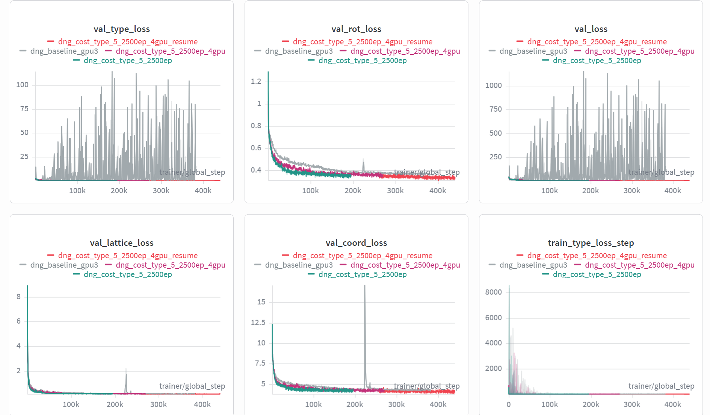

3-19-repo
- 昨天已经发现模型可以分清是有机还是金属，但是具体的block，在数据集上很相似，所以模型很难分清，因此今天来检查一下预测的block和gt的相似度。
1. 背景与目标¶
当前评估流程为三阶段：
- S1（粗粒度）：金属/有机类别是否一致
- S2（中粒度）：WL 图哈希（拓扑/骨架）是否一致
- S3（细粒度）：
pred_idx == gt_idx
新增评估：
- Top-k（k=5）：GT 是否落在候选 top-5
- S3_eq（等价类）：按
(WL hash + edge fingerprint)比较是否一致
2. 关键结果摘要（合并多日志，重复指标只陈述一次）¶
2.1 三阶段主指标（多跑次一致）¶
在 106k 与 103.7k 两类运行中，下列指标高度一致（代表值 + 典型波动）：
- S1（金属/有机）：约 0.980
- S2（WL 骨架）：约 0.810
-
S3_idx（
pred_idx == gt_idx）：约 0.105 -
Tanimoto 均值 0.9241，中位数 1.0000，
Tanimoto=184.45%。
2.2 Top-k 与 WL 唯一性分组（来自 conditional_topk 系列）¶
在 S1✓ & S2✓ 内，按「该 GT 的 WL 在数据中出现过的 unique(gt_idx) 数」分组后（conditional_topk.log 为代表）：
-
unique(gt_idx)==1（约 1.40×10⁴ 样本）：S3_idx 约 0.67～0.68，Top-5 约 0.87。 -
unique(gt_idx)>=2（约 7.0×10⁴ 样本）：S3_idx 约 0.018～0.020，Top-5 约 0.052～0.053。
[!NOTE]
原始 idx 层面的失败，高度集中在「同一 WL 下存在大量不同 gt_idx」的区域；WL「在样本里看似唯一」的那部分，idx 预测明显好很多。
2.3 Tanimoto 与误分类（来自 full + conditional_topk_tanimoto）¶
- 全体：Tanimoto 中位数 ≈ 1，
Tanimoto=1比例约 84.3%～84.5%（full.log与conditional_topk_tanimoto.log一致）。 - 在
S1✓ & S2✓内：无论 S3_idx 对错，Tanimoto 的 mean/median 在日志中均为 1.0；误分类子集上 Tanimoto≥任意高阈值（含 1）≈ 100%（详见conditional_topk_tanimoto.log）。
2.4 等价类 S3_eq（仅 similarity_check_eqclass.log）¶
- S3_eq Top-1 ≈ 0.8096，与 S2 ≈ 0.8096 对齐 → 说明在
(WL + edge fingerprint)定义下，Top-1 预测与 GT 的等价类几乎与「骨架对上」同概率；原始 S3_idx 低主要是 idx 过细/重复。 - S3_eq Top-5 ≈ 0.8335，远高于 S3_idx Top-5 ≈ 0.173。
2.5 一句话总结论¶
[!IMPORTANT]
当前大量 S3_idx「错误」在边集 Tanimoto 与等价类意义下多为「同结构不同编号」；真正结构/骨架层面的对齐主要由 S2 与 S3_eq 反映；优化分类标准与标签体系应优先于单纯刷
pred_idx==gt_idx。
3. 现象解读：为什么 S3 很低但unique(gt_idx)==1时的通过率足够高¶
3.1 指标矛盾的统一解释¶
观察到：
- S2 高（~0.81）说明骨架/拓扑已对齐
- S3 很低（~0.10）说明
pred_idx和gt_idx不一致 - 但 Tanimoto 在误分类中几乎全是 1
这组现象共同指向：
- 模型在结构层面（至少在当前指纹定义下）大多预测正确；
- 同一结构等价类里存在多个离散 idx；
- 评估使用
pred_idx == gt_idx作为唯一成功标准，导致“结构正确但编号不同”被大量计为失败。
4. 关于“是真一模一样，还是指纹不够强”的判断¶
当前证据能确认的是：
- 在现有
edge fingerprint + WL定义下，误分类与正确样本几乎不可区分。
但仍需注意：
- 现有 edge fingerprint 是边类型集合，判别力有限；
- 即使 Tanimoto=1，也不必然代表化学/几何完全一致；
- 但由于同时 WL 一致且 S3_eq 与 S2 对齐，工程上已足够支持“原始 idx 过细/重复”的判断。
5. 最终结论¶
基于所有 similarity_check 的一致结果，本项目当前瓶颈不是“模型不会选结构”，而是“细粒度 idx 标签与结构等价关系不一致”。
因此应把分类标准从“严格 idx 一致”升级为“等价类一致（S3_eq）”，并围绕等价类重构训练与评估流程。
这样可以让指标真实反映模型能力，并为后续下游生成优化提供正确方向。
实验结果¶
# /home/liem/MOF-BFN/ablation_ckpts/logs/mof_bfn_volume/dng_cost_type_5_2500ep_4gpu_resume/ckpt/epoch_2098-step_429429-loss_9.6298.ckpt
export LD_LIBRARY_PATH=/home/liem/.local/share/mamba/envs/mof-bfn/lib:$LD_LIBRARY_PATH
PYTHONPATH=. python -m experiments.infer \
paths.save_dir=/home/liem/MOF-BFN/ablation_ckpts \
experiment.wandb.name=infer_dng_test \
inference.ckpt_path=/home/liem/MOF-BFN/ablation_ckpts/logs/mof_bfn_volume/dng_cost_type_5_2500ep_4gpu_resume/ckpt/epoch_2098-step_429429-loss_9.6298.ckpt\
inference.inference_dir=/home/liem/MOF-BFN/infer_results_test_3_19_dng_cost_type_5
python -m postprocess.assemble \
--res_path /home/liem/MOF-BFN/infer_results_test_3_19_dng_cost_type_5/raw_results.pt \
--bb_z_path /home/liem/data/mofbfn/datasets/dng/bb_emb_space_tot_z.pt \
--bb_blocks_path /home/liem/data/mofbfn/datasets/dng/bb_emb_space_tot_blocks_processed.lmdb \
--max_process 100
# 检查连通性（是否形成完整 3D 骨架）
python -m evaluation.connect_check \
--res_path /home/liem/MOF-BFN/infer_results_test_3_19_dng_cost_type_5/raw_results.pt \
--bb_z_path /home/liem/data/mofbfn/datasets/dng/bb_emb_space_tot_z.pt \
--bb_blocks_path /home/liem/data/mofbfn/datasets/dng/bb_emb_space_tot_blocks_processed.lmdb \
--max_process 100
# 有效性检查（Validity Check）
python -m evaluation.validity_check \
--res_path /home/liem/MOF-BFN/infer_results_test_3_19_dng_cost_type_5/samples \
--max_process 100
connect = 0.92
{'has_carbon': 1.0, 'has_hydrogen': 0.99, 'has_atomic_overlaps': 0.24, 'has_overcoordinated_c': 0.4, 'has_overcoordinated_n': 0.08, 'has_overcoordinated_h': 0.35, 'has_undercoordinated_c': 0.3, 'has_undercoordinated_n': 0.15, 'has_undercoordinated_rare_earth': 0.0, 'has_metal': 1.0, 'has_lone_molecule': 0.23, 'has_high_charges': 0.14, 'has_suspicicious_terminal_oxo': 0.0, 'has_undercoordinated_alkali_alkaline': 0.06, 'has_geometrically_exposed_metal': 0.4, 'all_checks': 0.24}

结果仍然没有baseline好，但是发现一个问题，我只调小了type_cost的权重，为什么它的整体形状会变化那么多——直接收敛了，完全没有像baseline的波动。